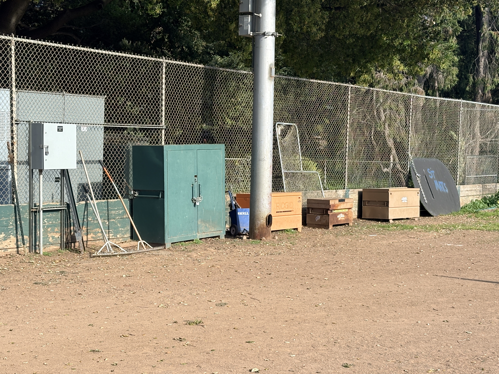
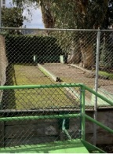
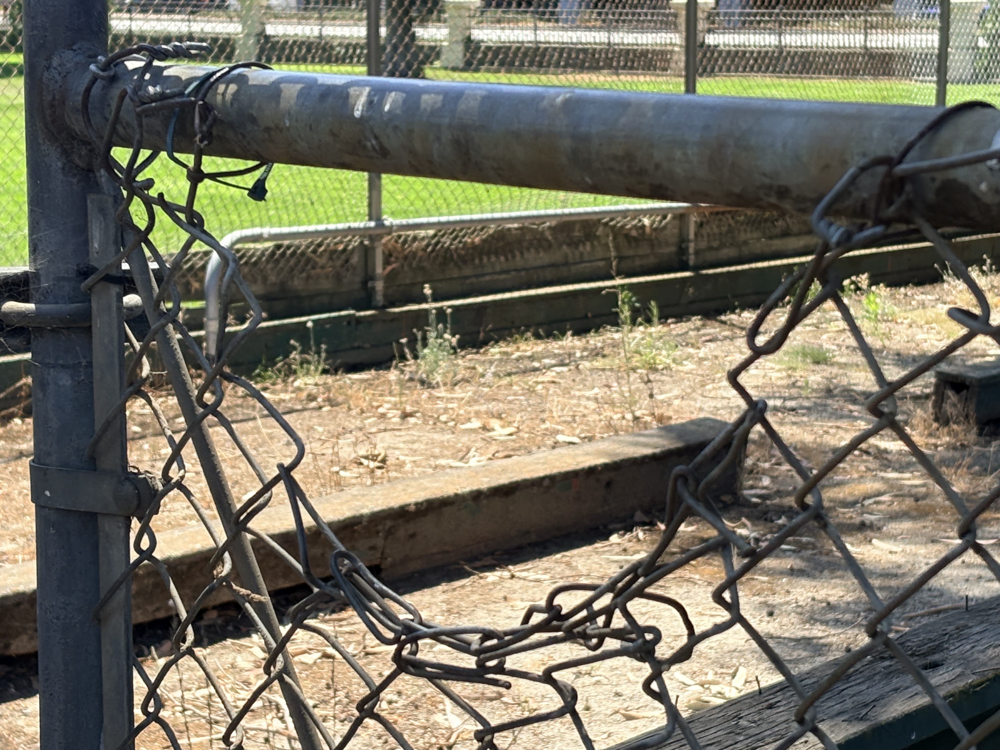
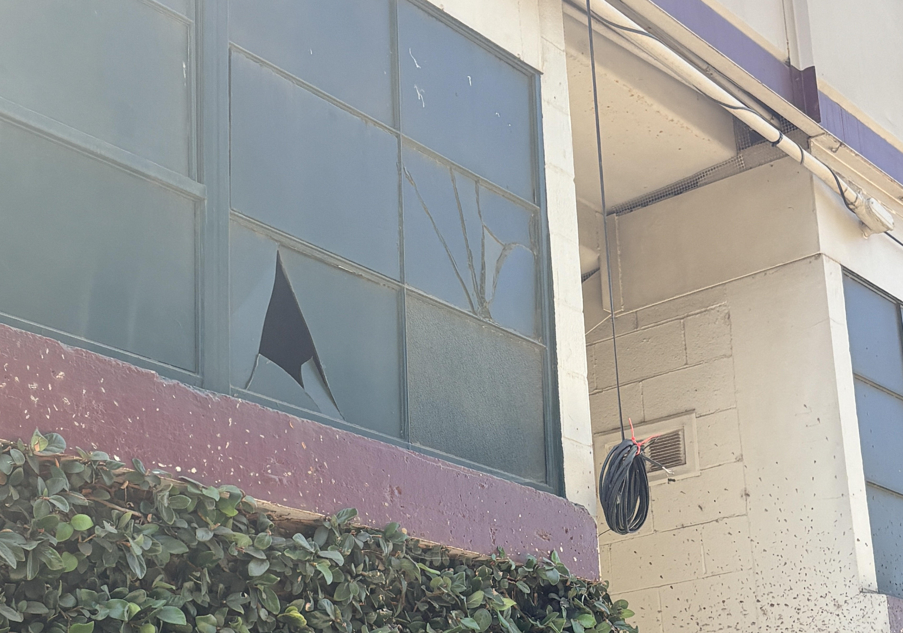
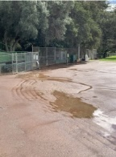
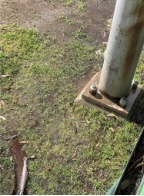
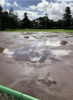
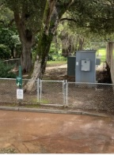
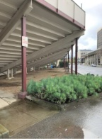

```
```
A Conversation About the Future of Fitzgerald Field
Fitzgerald Field has long been part of Central Park in San Mateo. A community-led effort is beginning to explore what this space could become—with input from residents, neighbors, and local stakeholders.
This is an early-stage, grassroots initiative focused on listening, learning, and understanding what the community values most—and what role this historic ballpark might play in the future.
Get InvolvedA Space with History—Showing Its Age
```Fitzgerald Field has been part of San Mateo for generations.
Today, the facility shows clear signs of age and limited functionality—and for many, it has quietly faded from everyday use.
How can the ballpark best serve the community in the years ahead?

```A Community-Led Effort
```This initiative is being led by community members to explore what might be possible for Fitzgerald Field.
At this stage, the focus is simple:
- Raise awareness
- Gather input
- Understand community interest
The City of San Mateo is aware of and supportive of this outreach, but is not directing or funding a project at this time. We expect this project to be funded largely by donors through a capital campaign.
There is no proposed plan. No decisions have been made.
This effort begins with listening.
```Why This Matters
```San Mateo continues to grow, and the demand for quality community space continues to increase.
At the same time, Fitzgerald Field remains underutilized relative to its potential.
Before anything is considered, the community should weigh in:
- Is there interest in rethinking this space?
- What would make it more valuable to the city and community?
- Who wants to help shape what’s possible?
Be Part of the Conversation
```If you have thoughts, ideas, or questions—we’d like to hear from you.
If you’re interested in helping move this effort forward, we’d welcome that as well.
And if you or your organization would consider providing financial support, we’re beginning those conversations too.
All outreach at this stage is informal and exploratory.
```







Fitzgerald Field has a long history in San Mateo.
What comes next is an open question—and one that starts with the community.